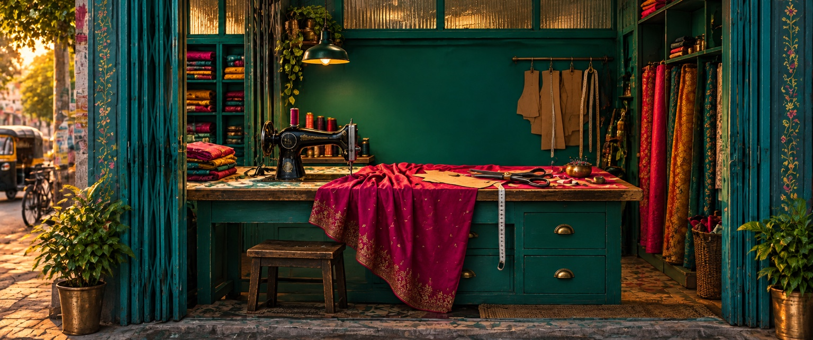

Music x Photographic - An archive of where India works!
What's on yourTable?
Your table is a story of your time, your age, and your...life!

YouTube Music
←→ stories
SPACE music
ESC home
Hi! What's your Table is a fun side project by Suyash, Shashank, Sneha and Himanshu
I, Himanshu, run IndiaFutureAI where we upskill Indians and help them find jobs, funding for startups, and build a solid career.
Suyash, Shashank, and Sneha are accomplished AI CREATOR FELLOWS with exceptional skills on AI.
We pick fun projects and make them real with our AI skills. In 'What's your Table?' we visited the tables of 16 Indians who build the Bharat. A table is a personal space. Something you spend most of your time on!
Think of it: You live years living in your table. It sits silently in a corner of your room, under the stains of tea, grease of automotives, glue of bookbinder, pen marks of a student, and what not?
In such moments of 'personal' building, both self and country, music is a constant partner.
From an entrepreneur to creator, we all live in joy of music.
To materialize Bharat ki table, we researched and brought down some of conventional and unconventional tables of India. But I want you to know, these tables are symbolic of the region.
If you know (and love)
Telugu music, go to Bangle Maker's table for a fun Telugu Playlist
Assamese? Boat maker!
Bengali? Book binder
Punjabi? Farmer
...you see every table is celebrating some music
So, which table are you on? (aka which music did you love?)
Just take a screenshot of your favourite table and tweet to us at @indiafutureai to tell us about your fav Table!
Trust me, we love to listen just as we made this project; or shall I say, this table, with love!